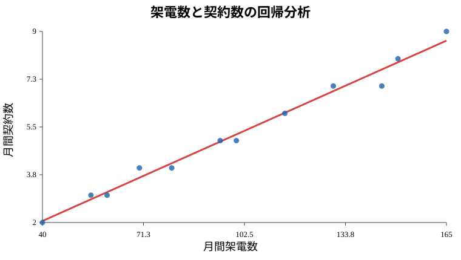
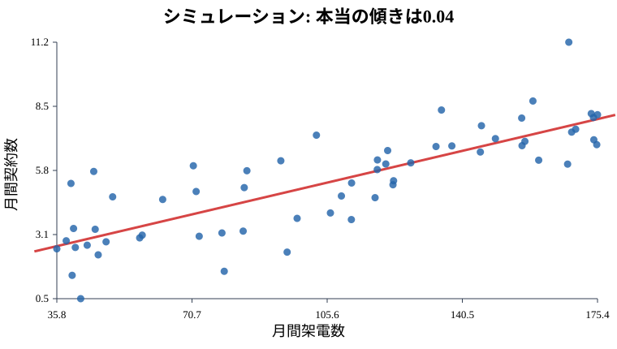

1. 回帰分析と最小二乗法
この資料の具体例
この資料では、営業活動と契約数を例にします。
ある会社で、営業担当者ごとに次のデータを集めたとします。
- 月間の架電数
- 月間の契約数
知りたいことはシンプルです。
架電数が多い人ほど、契約数は多いのか契約数は架電数だけで決まるわけではありません。商品力、相手企業の予算、営業担当者の経験、タイミングなども関係します。
それでも、「平均的には、架電数が増えると契約数はどれくらい増えるのか」を知りたい場面があります。これが回帰分析の出番です。
A. 理論理解と説明
回帰分析とは
回帰分析は、ある数値から別の数値を説明・予測する方法です。
この例では、
- 説明する側: 架電数
- 説明される側: 契約数
です。
単回帰分析では、次のような式を作ります。
契約数 = a + b × 架電数 + ea: 切片b: 回帰係数、傾きe: 誤差、説明しきれない部分
たとえば、結果が次のようになったとします。
契約数 = 1.2 + 0.04 × 架電数このとき、0.04 は「架電数が1件増えると、契約数が平均的に0.04件増える」という意味です。
1件あたりだと小さく見えますが、25件増えれば、
0.04 × 25 = 1なので、平均的には契約が約1件増えるイメージです。
最小二乗法とは
回帰分析では、データにできるだけ合う直線を引きます。
各営業担当者について、
残差 = 実際の契約数 - 予測された契約数を計算します。
最小二乗法とは、残差の2乗の合計がいちばん小さくなるように直線を決める方法です。
最小にしたいもの = Σ(実際の契約数 - 予測された契約数)^22乗する理由は、プラスとマイナスのズレが打ち消し合わないようにするためです。また、大きなズレを強く評価できます。
回帰直線は、すべての点を通る線ではありません。データ全体の「平均的な流れ」を表す線です。
B. 実践: Rによるモデル構築
次のコードでは、架電数から契約数を予測する単回帰モデルを作ります。
calls <- c(40, 55, 60, 70, 80, 95, 100, 115, 130, 145, 150, 165)
contracts <- c(2, 3, 3, 4, 4, 5, 5, 6, 7, 7, 8, 9)
sales <- data.frame(calls, contracts)
model <- lm(contracts ~ calls, data = sales)
summary(model)lm() は linear model の略です。
lm(contracts ~ calls, data = sales)は、「contracts を calls で説明する」という意味です。
summary(model) では、まず次の2つを見ます。
(Intercept): 切片calls: 架電数の回帰係数
Rで可視化する
Rの強みは、モデルを作るだけでなく、結果をすぐ図にできることです。
plot(sales$calls, sales$contracts,
xlab = "月間架電数",
ylab = "月間契約数",
main = "架電数と契約数の回帰分析",
pch = 19)
abline(model, col = "red", lwd = 2)この図では、点が実際の営業担当者、赤い線が回帰直線です。点が赤い線に近いほど、モデルの予測と実績が近いことを表します。

C. サンプルデータによるシミュレーション
次は、「本当は架電数25件あたり契約が1件増える」という世界を作ってみます。
set.seed(123)
n <- 60
calls <- runif(n, min = 30, max = 180)
error <- rnorm(n, mean = 0, sd = 1.2)
contracts <- 1.0 + 0.04 * calls + error
sales_sim <- data.frame(calls, contracts)
model_sim <- lm(contracts ~ calls, data = sales_sim)
summary(model_sim)ここで本当の式は、
契約数 = 1.0 + 0.04 × 架電数 + ランダムな誤差です。
シミュレーション結果も可視化します。
plot(sales_sim$calls, sales_sim$contracts,
xlab = "月間架電数",
ylab = "月間契約数",
main = "シミュレーション: 本当の傾きは0.04",
pch = 19)
abline(model_sim, col = "red", lwd = 2)
さらに、実際の値と予測値のズレも見ます。
sales_sim$predicted <- fitted(model_sim)
sales_sim$residual <- residuals(model_sim)
plot(sales_sim$predicted, sales_sim$residual,
xlab = "予測された契約数",
ylab = "残差",
main = "予測値と残差",
pch = 19)
abline(h = 0, col = "red", lwd = 2)
残差が0の上下にランダムに散らばっていれば、直線モデルとしては悪くなさそうです。曲線の形が見える場合は、直線だけでは説明しきれていない可能性があります。
実務での使い方
この分析は、たとえば次のような判断に使えます。
- 架電数を増やす施策に意味がありそうか
- 目標契約数から逆算して、どれくらいの活動量が必要か
- 架電数だけでは説明できない営業担当者を見つける
ただし、「架電数だけを増やせば必ず契約が増える」とは限りません。回帰分析は、答えを出す機械ではなく、判断の材料を増やす道具です。
Check
まとめテスト
最小二乗法が最小にしようとしているものはどれですか？
残差はプラスとマイナスで打ち消し合うため、2乗して合計したものを最小にする直線を選びます。